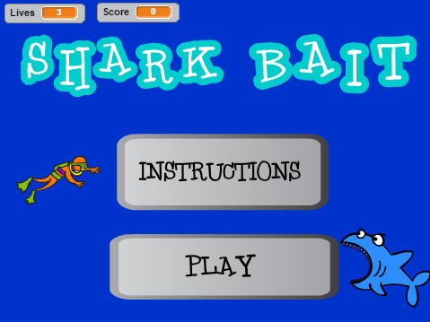

Hi! My name is Simran. I am a senior at Walton High School. At school, I am in many clubs including Math Team and the Walton Robotics Team. My favorite color is purple. I love painting, even though I'm not very artistic. I enjoy watching movies on Netflix. My favorite shows are White Collar, Friends, and How I Met Your Mother. I also like reading fiction books, like Harry Potter and Percy Jackson. I dislike running, playing sports, and watching ESPN. I love to travel. Over the course of my 17 years of life, I have been to more than 10 countries. Recently, I went to Guatemala during the beginning of summer break. In Guatemala, I hiked up mountains and through rain forests to explore the Mayan culture. I also had the chance to visit a volcano! I have also been to Thailand and Singapore where I tried exotic foods and met new friends. A few years ago, my family and I took a cruise to the Bahamas and visited the US Virgin Islands, Peurto Rico, and Dominica. Next, I want to travel to Australia! Look through this page to learn more about me!
Using Scratch, I created an intense ocean-thmed game called Shark Bait. In the game, the scuba diver must avoid the sharks that are coming directly at him, while also trying to collect oxygen to breathe!
The Core4 are variables, loops, conditionals, and functions.
Manuela M. Velosa, professor in the School of Computer Science at Carnagie Mellon, is the co-founder and Past President of the RoboCup Federation. She has helped create humanoid robots that play soccer according to the official rules of FIFA. The robots learn from the game and can actually communicate with each other to try to win. Ayanna Howard is a Georgia Tech Professer who formerly worked at NASA. At her time in NASA, she experimented with and updated rovers that explore the surface of MARS.
Today, my group and I programmed robots to dance along to a song! Our robot danced to Shut Up and Dance With Me by Walk the Moon. Through this process, I learned more about servos in relation with BoE shields and breadboards. For example, I learned how to connect the ground, control, and power wires from the servos to the port 12 and 13 onto the Board of Education Shield. Although our robot did not perform some of the correct actions, I loved when our robot danced in circles. The robots created and programmed by Veloso and Howard were similar to my robot in that they all had a function and an output. Instead of having robots that dance, Veloso creates robots that play soccer. On the other hand, Howard creates and programs rovers that can autonomously explore the surface of Mars!